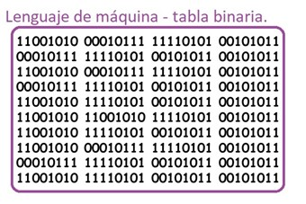
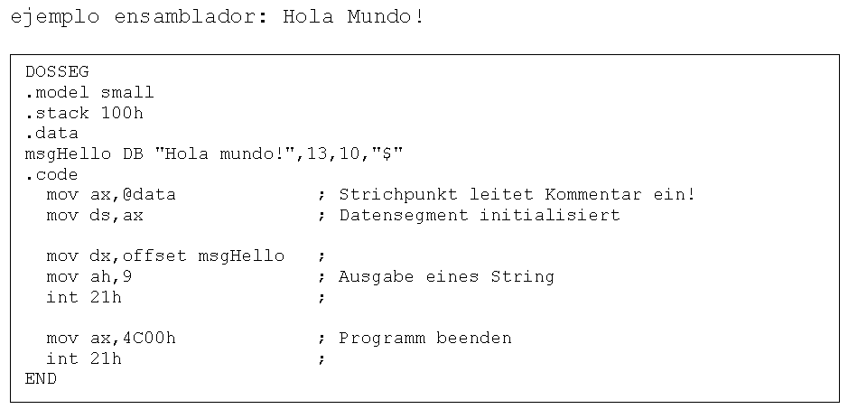

Tarea 2 - Clasificación de lenguajes informáticos
Los lenguajes de programación se utilizan para hacer funcionar las páginas web, las apps, el software y todo tipo de dispositivo que requiere programación informática y conocimientos de código. De acuerdo a su finalidad, los lenguajes de programación se clasifican en:
-
Lenguaje máquina
 -
Lenguajes de programación de bajo nivel
 - Lenguajes de programación de alto nivel
En grandes rasgos, el lenguaje máquina es el que usa cualquier máquina y se basa en un código binario; los lenguajes bajo nivel ensamblador, pueden variar según el ordenador o máquina que se utilice; y, por último, el lenguaje de alto nivel es un lenguaje que utiliza comandos y palabras (normalmente en inglés), las cuales es fácil de entender para un programador.